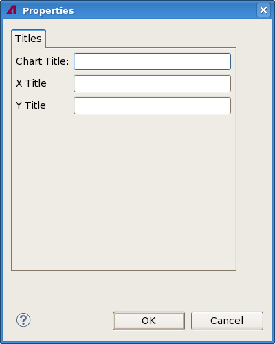

Shmoo view properties in the result tool
The shmoo view properties dialog lets you specify certain aspects of the look of a Shmoo view in the Integrated Result Tool, including the labels and the settings for the result value categories.

The dialog contains these elements:
- Chart Title: This field contains the title displayed at the top of
the chart.
By default, this is the name of the selected test.
- X-Title: The label for the x-axis. This title is not displayed.
By default, this label is empty.
- Y-Title: The label for the y-axis.
By default, this label is empty.
Functional changes
- Introduced in SmarTest 7.2.0
- SmarTest 7.2.1: Removed the Classes and Cycles tabs.